vignettes/msqrob2_workshop.rmd
msqrob2_workshop.rmdThe human phosphorylation datasets consist of 47 samples from condition A and 43 from condition B. Two aliquots were processed for each sample: one dedicated to total proteome analysis and the other one to the phosphoproteome analysis. The main sample preparation steps were identical for proteomics and phosphoproteomics apart from the additional phosphopeptide enrichment step. Generated raw data files were searched against a database containing all human entries extracted from UniProtKB-SwissProt (25/08/2021, 20,339 entries) using MaxQuant (v.1.6.17). The minimal peptide length required was seven amino acids and a maximum of one missed cleavage was allowed. The mass tolerance for the precursor ions was set to 20 ppm for the first search and 4.5 ppm for the main search. The mass tolerance for the fragment ions was set to 20 ppm. For proteomics data, methionine oxidation and acetylation of proteins’ N-termini were set as variable modifications and cysteine carbamidomethylation as a fixed modification. For phosphoproteomics data, serine, threonine, and tyrosine phosphorylations were added as variable modifications. For protein quantification, the “match between runs” option was enabled. The maximum FDR was set to 1% at peptide and protein levels with the use of a decoy strategy. Intensities were extracted from the Evidence.txt file to perform the following statistical analysis. The dataset can be found on PRIDE (PXD043476).
suppressPackageStartupMessages({
library("QFeatures")
library("dplyr")
library("tidyr")
library("ggplot2")
library("msqrob2")
library("stringr")
library("ExploreModelMatrix")
library("kableExtra")
library("ComplexHeatmap")
library("scater")
library("patchwork")
library("seqinr")
library("data.table")
library("BiocFileCache")
library("purrr")
})The data were searched with MaxQuant version version 1.5.5.6 and are deposited on the PRIDE repository PXD043476.
In this chapter we use the search files available on msqrob2data.
The phospho enriched data are stored in “evidence_phospho_enriched.txt.zip”. The corresponding annotation file can be found in “expDesign.csv”.
bfc <- BiocFileCache()
psmFile <- bfcrpath(bfc,"https://github.com/statOmics/msqrob2data/raw/refs/heads/main/dda/phospho/evidence_phospho_enriched.txt.zip")## Sequence Length Modifications Modified.sequence
## <char> <int> <char> <char>
## 1: AAAIQTMSLDAER 13 Unmodified _AAAIQTMSLDAER_
## 2: AAARLSLTDPLVAER 15 Phospho (STY) _AAARLS(Phospho (STY))LTDPLVAER_
## 3: AAARLSLTDPLVAER 15 Phospho (STY) _AAARLS(Phospho (STY))LTDPLVAER_
## 4: AAATPESQEPQAK 13 Phospho (STY) _AAAT(Phospho (STY))PESQEPQAK_
## 5: AAATPESQEPQAK 13 Phospho (STY) _AAAT(Phospho (STY))PESQEPQAK_
## 6: AAATPESQEPQAK 13 Phospho (STY) _AAAT(Phospho (STY))PESQEPQAK_
## Oxidation..M..Probabilities Phospho..STY..Probabilities
## <char> <char>
## 1:
## 2: AAARLS(0.997)LT(0.003)DPLVAER
## 3: AAARLS(0.806)LT(0.194)DPLVAER
## 4: AAAT(1)PESQEPQAK
## 5: AAAT(1)PESQEPQAK
## 6: AAAT(1)PESQEPQAK
## Oxidation..M..Score.Diffs Phospho..STY..Score.Diffs Acetyl..Protein.N.term.
## <char> <char> <int>
## 1: 0
## 2: AAARLS(26)LT(-26)DPLVAER 0
## 3: AAARLS(6.2)LT(-6.2)DPLVAER 0
## 4: AAAT(35)PES(-35)QEPQAK 0
## 5: AAAT(35)PES(-35)QEPQAK 0
## 6: AAAT(35)PES(-35)QEPQAK 0
## Oxidation..M. Phospho..STY. Missed.cleavages Proteins
## <int> <int> <int> <char>
## 1: 0 0 0 sp|O75326|SEM7A_HUMAN
## 2: 0 1 1 sp|P13224|GP1BB_HUMAN
## 3: 0 1 1 sp|P13224|GP1BB_HUMAN
## 4: 0 1 0 sp|P49006|MRP_HUMAN
## 5: 0 1 0 sp|P49006|MRP_HUMAN
## 6: 0 1 0 sp|P49006|MRP_HUMAN
## Leading.proteins Leading.razor.protein Type Raw.file Experiment
## <char> <char> <char> <char> <char>
## 1: sp|O75326|SEM7A_HUMAN sp|O75326|SEM7A_HUMAN MULTI-MATCH QX21595GM BIO87
## 2: sp|P13224|GP1BB_HUMAN sp|P13224|GP1BB_HUMAN MULTI-MSMS QX21643GM BIO44
## 3: sp|P13224|GP1BB_HUMAN sp|P13224|GP1BB_HUMAN MULTI-MSMS QX21643GM BIO44
## 4: sp|P49006|MRP_HUMAN sp|P49006|MRP_HUMAN MULTI-MSMS QX21469GM BIO35
## 5: sp|P49006|MRP_HUMAN sp|P49006|MRP_HUMAN MULTI-MSMS QX21484GM BIO12
## 6: sp|P49006|MRP_HUMAN sp|P49006|MRP_HUMAN MULTI-MSMS QX21487GM BIO72
## MS.MS.m.z Charge m.z Mass Uncalibrated...Calibrated.m.z..ppm.
## <num> <int> <num> <num> <num>
## 1: NA 2 688.8456 1375.677 2.1988
## 2: 832.4357 2 831.9324 1661.850 2.6258
## 3: 555.2924 3 554.9573 1661.850 1.3928
## 4: 704.3115 2 704.3112 1406.608 1.3905
## 5: 704.8138 2 704.3112 1406.608 1.4335
## 6: 704.3116 2 704.3112 1406.608 1.3459
## Uncalibrated...Calibrated.m.z..Da. Mass.error..ppm. Mass.error..Da.
## <num> <num> <num>
## 1: 0.00151460 -0.011460 -7.8943e-06
## 2: 0.00218450 0.569050 4.7341e-04
## 3: 0.00077295 -0.255910 -1.4202e-04
## 4: 0.00097932 -0.040652 -2.8632e-05
## 5: 0.00100960 -0.076414 -5.3819e-05
## 6: 0.00094794 0.148200 1.0438e-04
## Uncalibrated.mass.error..ppm. Uncalibrated.mass.error..Da.
## <num> <num>
## 1: 2.1873 0.00150670
## 2: 3.1948 0.00265790
## 3: 1.1369 0.00063093
## 4: 1.3498 0.00095069
## 5: 1.3571 0.00095579
## 6: 1.4941 0.00105230
## Max.intensity.m.z.0 Retention.time Retention.length
## <num> <num> <num>
## 1: 689.3471 55.888 0.23706
## 2: 831.9327 71.062 0.42487
## 3: 554.9572 71.049 0.57573
## 4: 704.3113 26.579 0.55736
## 5: 704.3111 26.470 0.65098
## 6: 704.8127 26.531 0.48654
## Calibrated.retention.time Calibrated.retention.time.start
## <num> <num>
## 1: 55.209 55.102
## 2: 70.267 69.982
## 3: 70.255 70.013
## 4: 25.847 25.650
## 5: 25.794 25.531
## 6: 25.758 25.626
## Calibrated.retention.time.finish Retention.time.calibration
## <num> <num>
## 1: 55.339 -0.67882
## 2: 70.407 -0.79458
## 3: 70.589 -0.79458
## 4: 26.207 -0.73157
## 5: 26.182 -0.67618
## 6: 26.112 -0.77320
## Match.time.difference Match.m.z.difference Match.q.value Match.score
## <num> <num> <lgcl> <num>
## 1: -0.35667 -0.00052413 NA 153.12
## 2: NA NA NA NA
## 3: NA NA NA NA
## 4: NA NA NA NA
## 5: NA NA NA NA
## 6: NA NA NA NA
## Number.of.data.points Number.of.scans Number.of.isotopic.peaks PIF
## <int> <int> <int> <int>
## 1: 11 7 2 NA
## 2: 32 13 3 0
## 3: 42 18 4 0
## 4: 32 18 2 0
## 5: 35 22 2 0
## 6: 24 16 2 0
## Fraction.of.total.spectrum Base.peak.fraction PEP MS.MS.count
## <int> <int> <num> <int>
## 1: NA NA NA 0
## 2: 0 0 3.8590e-03 1
## 3: 0 0 6.7431e-05 1
## 4: 0 0 3.8898e-02 1
## 5: 0 0 3.8898e-02 1
## 6: 0 0 3.8898e-02 1
## MS.MS.scan.number Score Delta.score Combinatorics Intensity Reverse
## <int> <num> <num> <int> <num> <char>
## 1: NA NA NA 0 886950
## 2: 37853 72.417 53.094 2 4825400
## 3: 37856 81.723 74.842 2 4500600
## 4: 10391 69.602 53.712 2 2999900
## 5: 10590 69.602 48.731 2 4720200
## 6: 10171 69.602 56.248 2 3592100
## Potential.contaminant id Protein.group.IDs Peptide.ID Mod..peptide.ID
## <char> <int> <char> <int> <int>
## 1: 51 106 3 3
## 2: 52 323 4 4
## 3: 53 323 4 4
## 4: 54 449 5 5
## 5: 55 449 5 5
## 6: 56 449 5 5
## MS.MS.IDs Best.MS.MS Oxidation..M..site.IDs Phospho..STY..site.IDs
## <char> <int> <char> <char>
## 1: NA
## 2: 38 38 242
## 3: 39 39 242
## 4: 40 40 657
## 5: 41 41 657
## 6: 42 42 657
## Taxonomy.IDs
## <lgcl>
## 1: NA
## 2: NA
## 3: NA
## 4: NA
## 5: NA
## 6: NAWe will already filter the data to make it smaller by removing psms with missing values for the intensities and psms for which the probability on a phospo group is smaller or equal to 75%.
The phospho probability can be found in the variable
Phospho..STY..Probabilities. It is indicated at the
position of the modification in the sequence between brackets. If there
is no phosphorylation site detected the variable contains an empty
string. We return the maximum probability among all potential
sites.
We keep the peptidoforms out if they have a probability on a phosph group is larger than 0.75 and if their intensity is not NA.
psm <- psm |>
mutate(
prob = map_dbl(
str_extract_all(Phospho..STY..Probabilities, "\\(([^)]+)\\)"),
~ if (length(.x) == 0) {
0
} else {
max(as.numeric(str_remove_all(.x, "[()]")))
}
)
) |> filter(prob > .75 & !is.na(Intensity))
annotFile <- bfcrpath(bfc,"https://github.com/statOmics/msqrob2data/raw/refs/heads/main/dda/phospho/expDesign.csv")## file assay source subset
## <char> <char> <char> <char>
## 1: QX21619GM.raw BIO40 A1 y
## 2: QX21842GM.raw BIO49 A10 y
## 3: QX21652GM.raw BIO50 A11 y
## 4: QX21616GM.raw BIO51 A12 y
## 5: QX21711GM.raw BIO52 A13 y
## 6: QX21764GM.raw BIO53 A14 yThe variable source can be used to link the phospho
enriched and the non-enriched runs.
We will alter the annotation:
We first generate variable runCol, that gives an
overview of the different runs in the experiment, i.e. the unique names
in the column Run of the report file. This is a mandatory column in the
annotation file that is required by the readQFeatures
function that will be used to generate a QFeatures object with the quant
data. The run in the evidence file is indicated with the variable
Raw.file and here does not contain the file extension
.raw, which we remove from the filenames stored in
File of the meta data.
We make a variable condition. There are two conditions: condition
A and condition B. We can extract this by taking the first letter from
the variable source.
First, recall that the psm table is file in long format. Every
quantitative column in the precursor table contains information for
multiple runs. Therefore, the function split the table based on the run
identifier, given by the runCol argument (for MaqQuant,
that identifier is contained in Raw.file). So, the
QFeatures object after import will contain as many sets as
there are runs. Next, the function links the annotation table with the
PSM data. To achieve this, the annotation table must contain a
runCol column that provides the run identifier in which
each sample has been acquired, and this information will be used to
match the identifiers in the Raw.file column of the psm
table.
Here, we will use the Intensity column as quantification
input.
(qf <- readQFeatures(assayData = psm,
colData = annot,
quantCols = "Intensity",
runCol = "Raw.file"))## | | | 0% | |= | 1% | |== | 2% | |== | 3% | |=== | 4% | |==== | 6% | |===== | 7% | |===== | 8% | |====== | 9% | |======= | 10% | |======== | 11% | |========= | 12% | |========= | 13% | |========== | 14% | |=========== | 16% | |============ | 17% | |============ | 18% | |============= | 19% | |============== | 20% | |=============== | 21% | |================ | 22% | |================ | 23% | |================= | 24% | |================== | 26% | |=================== | 27% | |=================== | 28% | |==================== | 29% | |===================== | 30% | |====================== | 31% | |======================= | 32% | |======================= | 33% | |======================== | 34% | |========================= | 36% | |========================== | 37% | |========================== | 38% | |=========================== | 39% | |============================ | 40% | |============================= | 41% | |============================== | 42% | |============================== | 43% | |=============================== | 44% | |================================ | 46% | |================================= | 47% | |================================= | 48% | |================================== | 49% | |=================================== | 50% | |==================================== | 51% | |===================================== | 52% | |===================================== | 53% | |====================================== | 54% | |======================================= | 56% | |======================================== | 57% | |======================================== | 58% | |========================================= | 59% | |========================================== | 60% | |=========================================== | 61% | |============================================ | 62% | |============================================ | 63% | |============================================= | 64% | |============================================== | 66% | |=============================================== | 67% | |=============================================== | 68% | |================================================ | 69% | |================================================= | 70% | |================================================== | 71% | |=================================================== | 72% | |=================================================== | 73% | |==================================================== | 74% | |===================================================== | 76% | |====================================================== | 77% | |====================================================== | 78% | |======================================================= | 79% | |======================================================== | 80% | |========================================================= | 81% | |========================================================== | 82% | |========================================================== | 83% | |=========================================================== | 84% | |============================================================ | 86% | |============================================================= | 87% | |============================================================= | 88% | |============================================================== | 89% | |=============================================================== | 90% | |================================================================ | 91% | |================================================================= | 92% | |================================================================= | 93% | |================================================================== | 94% | |=================================================================== | 96% | |==================================================================== | 97% | |==================================================================== | 98% | |===================================================================== | 99% | |======================================================================| 100%## An instance of class QFeatures (type: bulk) with 90 sets:
##
## [1] QX21460GM: SummarizedExperiment with 273 rows and 1 columns
## [2] QX21466GM: SummarizedExperiment with 379 rows and 1 columns
## [3] QX21469GM: SummarizedExperiment with 301 rows and 1 columns
## ...
## [88] QX21842GM: SummarizedExperiment with 152 rows and 1 columns
## [89] QX21845GM: SummarizedExperiment with 142 rows and 1 columns
## [90] QX21851GM: SummarizedExperiment with 452 rows and 1 columns
psmFileNE <- bfcrpath(bfc,"https://github.com/statOmics/msqrob2data/raw/refs/heads/main/dda/phospho/evidence_nonenriched.txt.zip")
psmNE <- fread(psmFileNE, check.names = TRUE, integer64 = "double")
annotFileNE <- bfcrpath(bfc,"https://github.com/statOmics/msqrob2data/raw/refs/heads/main/dda/phospho/expDesignNonEnriched.csv")
annotNE <- fread(annotFileNE,check.names = TRUE, integer64 = "double")We first generate variable runCol, that gives an
overview of the different runs in the experiment, i.e. the unique names
in the column Run of the report file. This is a mandatory column in the
annotation file that is required by the readQFeatures
function that will be used to generate a QFeatures object with the quant
data. The run in the evidence file is indicated with the variable
Raw.file and here does not contain the file extension
.raw, which we remove from the filenames stored in
File of the meta data.
We make a variable condition. There are two conditions: condition A and condition B. We can extract this by taking the first letter from the variable Condition.
annotNE <- annotNE |>
mutate(
runCol = gsub(pattern = ".raw",replacement = "", x=file), #1.
condition = substr(source,1,1)
)The non-enriched dataset contains more samples than the phospho-enriched dataset. We will remove the samples that are not matching to the these in the phospho data. The samples can be matched by the variable source.
We will also filter out the psm-level data from the evidence file that does not match to runs corresponding to the samples that are retained. We can use the columns Raw.file in the psm table and runCol in the annotation for that purpose.
A gain we read the psm table which is in long format and use the
Intensity column as quantification input.
(qfNE <- readQFeatures(assayData = psmNE,
colData = annotNE,
quantCols = "Intensity",
runCol = "Raw.file"))## | | | 0% | |= | 1% | |== | 2% | |== | 3% | |=== | 4% | |==== | 6% | |===== | 7% | |===== | 8% | |====== | 9% | |======= | 10% | |======== | 11% | |========= | 12% | |========= | 13% | |========== | 14% | |=========== | 16% | |============ | 17% | |============ | 18% | |============= | 19% | |============== | 20% | |=============== | 21% | |================ | 22% | |================ | 23% | |================= | 24% | |================== | 26% | |=================== | 27% | |=================== | 28% | |==================== | 29% | |===================== | 30% | |====================== | 31% | |======================= | 32% | |======================= | 33% | |======================== | 34% | |========================= | 36% | |========================== | 37% | |========================== | 38% | |=========================== | 39% | |============================ | 40% | |============================= | 41% | |============================== | 42% | |============================== | 43% | |=============================== | 44% | |================================ | 46% | |================================= | 47% | |================================= | 48% | |================================== | 49% | |=================================== | 50% | |==================================== | 51% | |===================================== | 52% | |===================================== | 53% | |====================================== | 54% | |======================================= | 56% | |======================================== | 57% | |======================================== | 58% | |========================================= | 59% | |========================================== | 60% | |=========================================== | 61% | |============================================ | 62% | |============================================ | 63% | |============================================= | 64% | |============================================== | 66% | |=============================================== | 67% | |=============================================== | 68% | |================================================ | 69% | |================================================= | 70% | |================================================== | 71% | |=================================================== | 72% | |=================================================== | 73% | |==================================================== | 74% | |===================================================== | 76% | |====================================================== | 77% | |====================================================== | 78% | |======================================================= | 79% | |======================================================== | 80% | |========================================================= | 81% | |========================================================== | 82% | |========================================================== | 83% | |=========================================================== | 84% | |============================================================ | 86% | |============================================================= | 87% | |============================================================= | 88% | |============================================================== | 89% | |=============================================================== | 90% | |================================================================ | 91% | |================================================================= | 92% | |================================================================= | 93% | |================================================================== | 94% | |=================================================================== | 96% | |==================================================================== | 97% | |==================================================================== | 98% | |===================================================================== | 99% | |======================================================================| 100%## An instance of class QFeatures (type: bulk) with 90 sets:
##
## [1] QE37617GM: SummarizedExperiment with 9912 rows and 1 columns
## [2] QE37620GM: SummarizedExperiment with 9672 rows and 1 columns
## [3] QE37623GM: SummarizedExperiment with 9806 rows and 1 columns
## ...
## [88] QE37985GM: SummarizedExperiment with 7769 rows and 1 columns
## [89] QE37988GM: SummarizedExperiment with 6430 rows and 1 columns
## [90] QE37991GM: SummarizedExperiment with 6386 rows and 1 columns
for (i in names(qf)) {
rowdata <- rowData(qf[[i]])
rowdata$ionID <- paste0(rowdata$Modified.sequence, rowdata$Charge)
rowdata$value <- assay(qf[[i]])[, 1]
rowdata <- data.frame(rowdata) |>
group_by(ionID) |>
mutate(psmRank = rank(-value))
rowData(qf[[i]])$psmRank <- rowdata$psmRank
rowData(qf[[i]])$ionID <- rowdata$ionID
}
qf <- filterFeatures(qf, ~ psmRank == 1, keep = TRUE)
qf <- joinAssays(qf, names(qf), "ions", "ionID")
qf <- filterFeatures(qf, ~Proteins != "" & ## Remove failed protein inference
!grepl(";", Proteins) & ## Remove protein groups
Reverse != "+" & ## Remove decoys
Potential.contaminant != "+" & ## Remove contaminants
!grepl("Sigma", Proteins) ## Remove Sigma proteins used for internal QC
)
qf <- logTransform(qf, base = 2, i = "ions", name = "ionsLog")Only keep ions that are picked up in at least 10 samples.
qf <- sweep(
qf, MARGIN = 2, STATS = nfLogMedianOfRatios(qf,"ionsLog"),
i = "ionsLog", name = "ionsNorm"
)
psmDens <- qf[, , "ionsNorm"] |>
longForm(colvars = colnames(colData(qf))) |>
data.frame() |>
filter(!is.na(value)) |>
ggplot() +
aes(x = value,
colour = interaction(condition, subset),
group = colname) +
geom_density() +
theme_minimal() +
labs(subtitle = "Normalised log2 phospho-ion intensities")
psmDens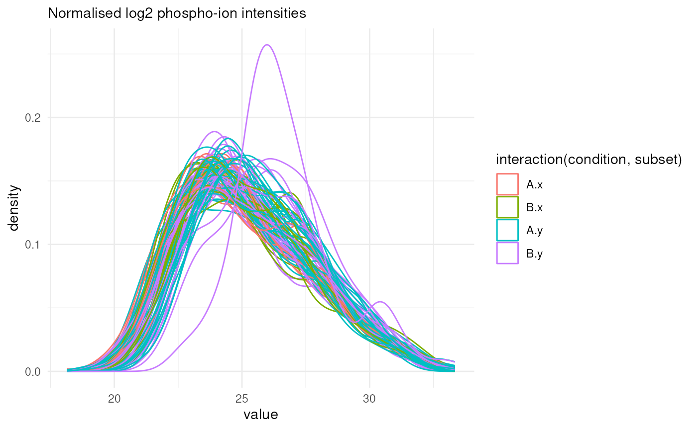
qf[, , "ionsNorm"] |>
longForm(colvars = colnames(colData(qf))) |>
data.frame() |>
filter(!is.na(value)) |>
ggplot() +
aes(x = source,
y = value,
colour = interaction(condition,subset),
group = colname) +
xlab("sample") +
geom_boxplot() +
theme_minimal() +
labs(subtitle = "Normalised log2 phospho-ion intensities")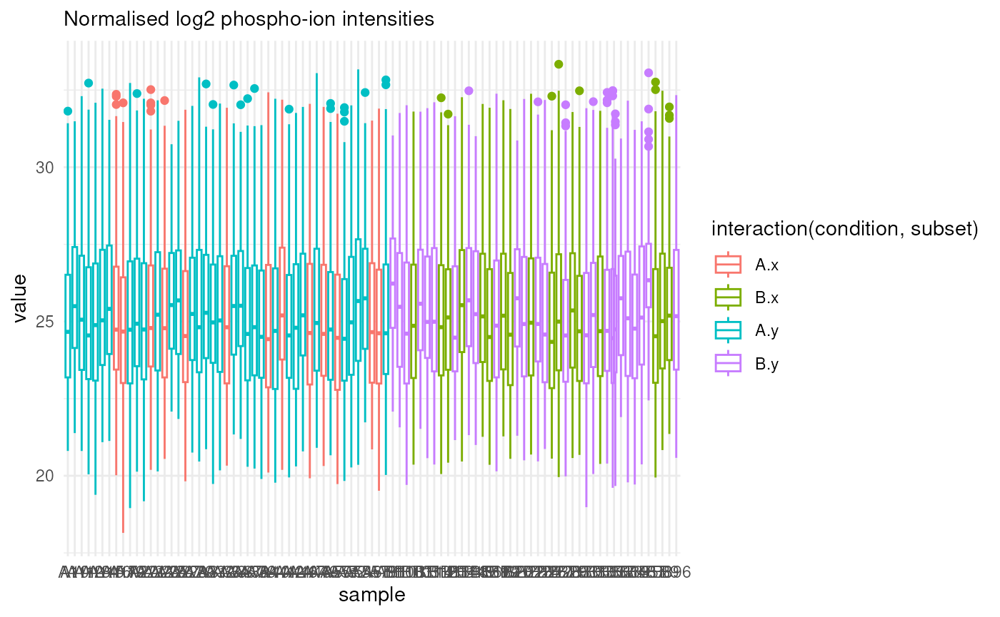
qf[, , "ionsNorm"] |>
longForm(colvars = colnames(colData(qf)), rowvars = "Charge") |>
as.data.frame() |>
filter(!is.na(value)) |>
filter(Charge<=4) |>
ggplot(aes(x = source)) +
geom_bar(aes(fill = factor(Charge, levels = 4:1)),
colour = "black") +
labs(title = "ion types per sample",
x = "Sample",
fill = "Charge state") +
theme_bw()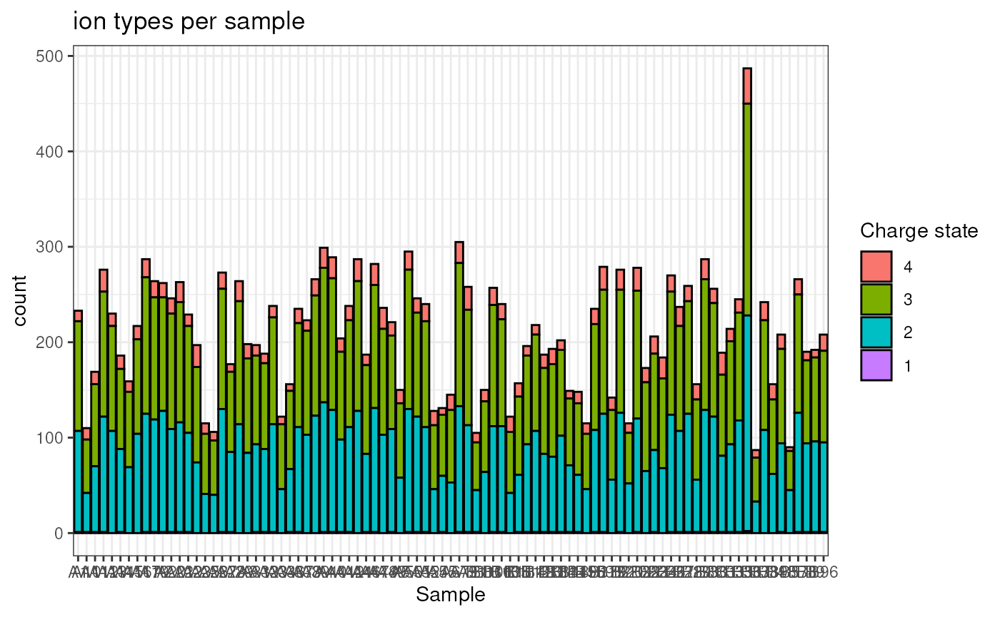
qf[,,"ionsNorm"] |>
longForm(colvars = colnames(colData(qf)),
rowvars= c("ionID",
"Proteins")) |>
data.frame() |>
filter(!is.na(value)) |>
group_by(condition, source) |>
summarise(ions = length(unique(ionID)),
`Proteins` = length(unique(Proteins))) |>
pivot_longer(-(1:2),
names_to = "Feature",
values_to = "IDs") |>
ggplot(aes(x = source, y = IDs, fill = condition)) +
geom_col() +
#scale_fill_observable() +
facet_wrap(~Feature,
scales = "free_y") +
labs(title = "Precursor and protein group identificiations per PTM sample",
x = "Sample",
y = "Identifications") +
theme_bw() +
theme(axis.text.x = element_text(angle = 90))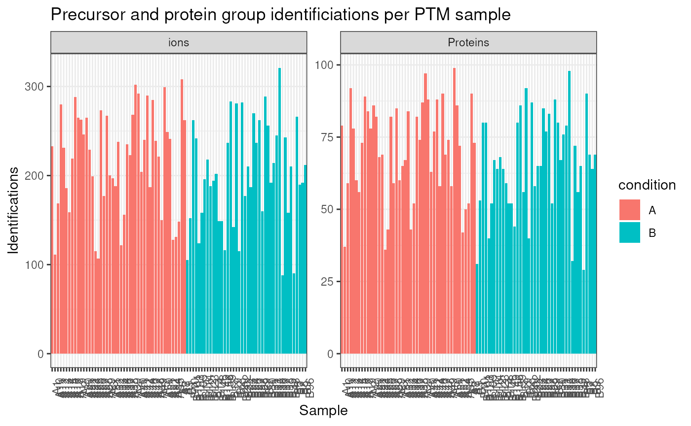
psmMDS <- getWithColData(qf, "ionsNorm") |>
as("SingleCellExperiment") |>
runMDS(exprs_values = 1) |>
plotMDS(colour_by = "condition", shape_by = "subset") +
labs(title = "Median normalisation")
psmMDS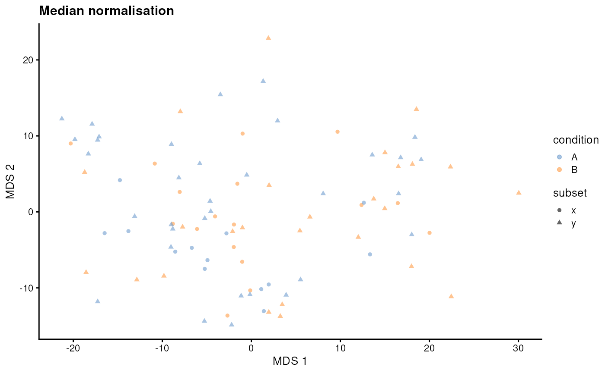
for (i in names(qfNE)) {
rowdata <- rowData(qfNE[[i]])
rowdata$ionID <- paste0(rowdata$Modified.sequence, rowdata$Charge)
rowdata$value <- assay(qfNE[[i]])[, 1]
rowdata <- data.frame(rowdata) |>
group_by(ionID) |>
mutate(psmRank = rank(-value))
rowData(qfNE[[i]])$psmRank <- rowdata$psmRank
rowData(qfNE[[i]])$ionID <- rowdata$ionID
}
qfNE <- filterFeatures(qfNE, ~ psmRank == 1, keep = TRUE)
qfNE <- joinAssays(qfNE, names(qfNE), "ions", "ionID")
qfNE <- filterFeatures(qfNE, ~Proteins != "" & ## Remove failed protein inference
!grepl(";", Proteins) & ## Remove protein groups
Reverse != "+" & ## Remove decoys
Potential.contaminant != "+" & ## Remove contaminants
!grepl("Sigma", Proteins) ## Remove Sigma proteins used for internal QC
)
qfNE <- logTransform(qfNE, base = 2, i = "ions", name = "ionsLog")Only keep ions that are picked up in at least 10 samples.
qfNE <- sweep(
qfNE, MARGIN = 2, STATS = nfLogMedianOfRatios(qfNE,"ionsLog"),
i = "ionsLog", name = "ionsNorm"
)
qfNE <- aggregateFeatures(qfNE,
i = "ionsNorm",
fcol = "Proteins",
na.rm = TRUE,
name = "proteins",
fun = MsCoreUtils::robustSummary)## | | | 0%## | |======================================================================| 100%
psmDens <- qfNE[, , "ionsNorm"] |>
longForm(colvars = colnames(colData(qfNE))) |>
data.frame() |>
filter(!is.na(value)) |>
ggplot() +
aes(x = value,
colour = interaction(condition, subset),
group = colname) +
geom_density() +
theme_minimal() +
labs(subtitle = "Normalised log2 ion intensities")
psmDens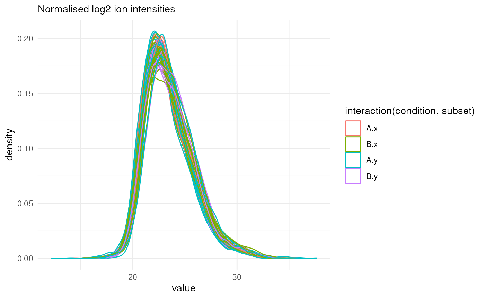
qfNE[, , "ionsNorm"] |>
longForm(colvars = colnames(colData(qfNE))) |>
data.frame() |>
filter(!is.na(value)) |>
ggplot() +
aes(x = source,
y = value,
colour = interaction(condition,subset),
group = colname) +
xlab("sample") +
geom_boxplot() +
theme_minimal() +
labs(subtitle = "Normalised log2 ion intensities")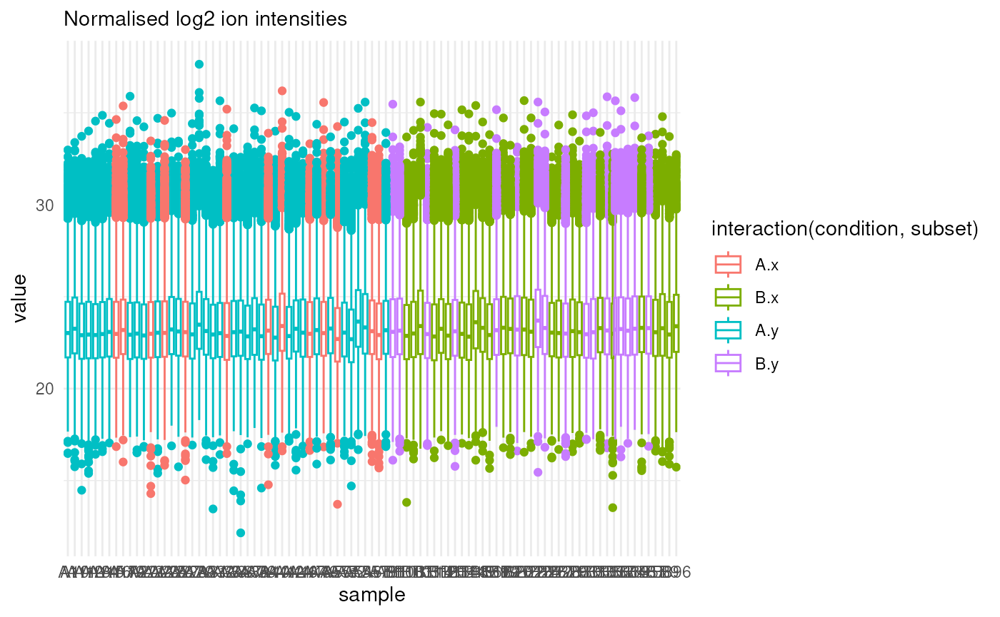
qfNE[, , "ionsNorm"] |>
longForm(colvars = colnames(colData(qfNE)), rowvars = "Charge") |>
as.data.frame() |>
filter(!is.na(value)) |>
filter(Charge<=4) |>
ggplot(aes(x = source)) +
geom_bar(aes(fill = factor(Charge, levels = 4:1)),
colour = "black") +
labs(title = "ion types per sample",
x = "Sample",
fill = "Charge state") +
theme_bw()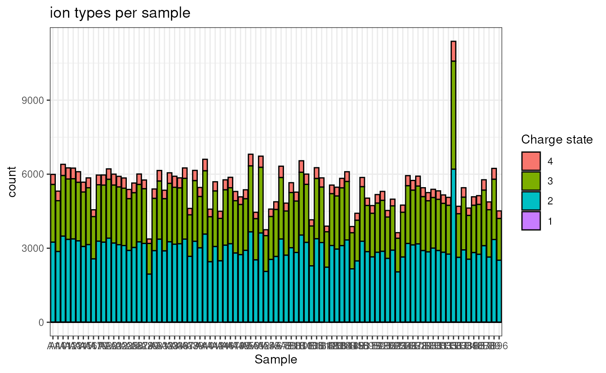
qfNE[,,"ionsNorm"] |>
longForm(colvars = colnames(colData(qfNE)),
rowvars= c("ionID",
"Proteins")) |>
data.frame() |>
filter(!is.na(value)) |>
group_by(condition, source) |>
summarise(ions = length(unique(ionID)),
`Proteins` = length(unique(Proteins))) |>
pivot_longer(-(1:2),
names_to = "Feature",
values_to = "IDs") |>
ggplot(aes(x = source, y = IDs, fill = condition)) +
geom_col() +
#scale_fill_observable() +
facet_wrap(~Feature,
scales = "free_y") +
labs(title = "Precursor and protein group identificiations per PTM sample",
x = "Sample",
y = "Identifications") +
theme_bw() +
theme(axis.text.x = element_text(angle = 90))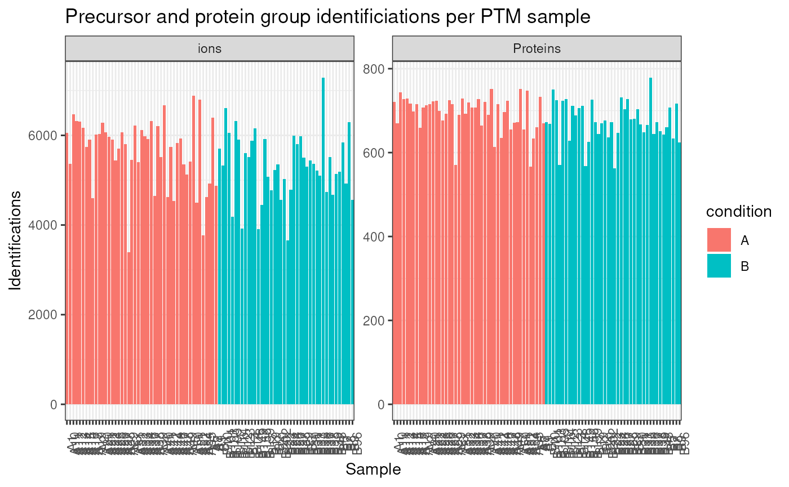
psmDens <- qfNE[, , "proteins"] |>
longForm(colvars = colnames(colData(qfNE))) |>
data.frame() |>
filter(!is.na(value)) |>
ggplot() +
aes(x = value,
colour = interaction(condition, subset),
group = colname) +
geom_density() +
theme_minimal() +
labs(subtitle = "Normalised log2 protein intensities")
psmDens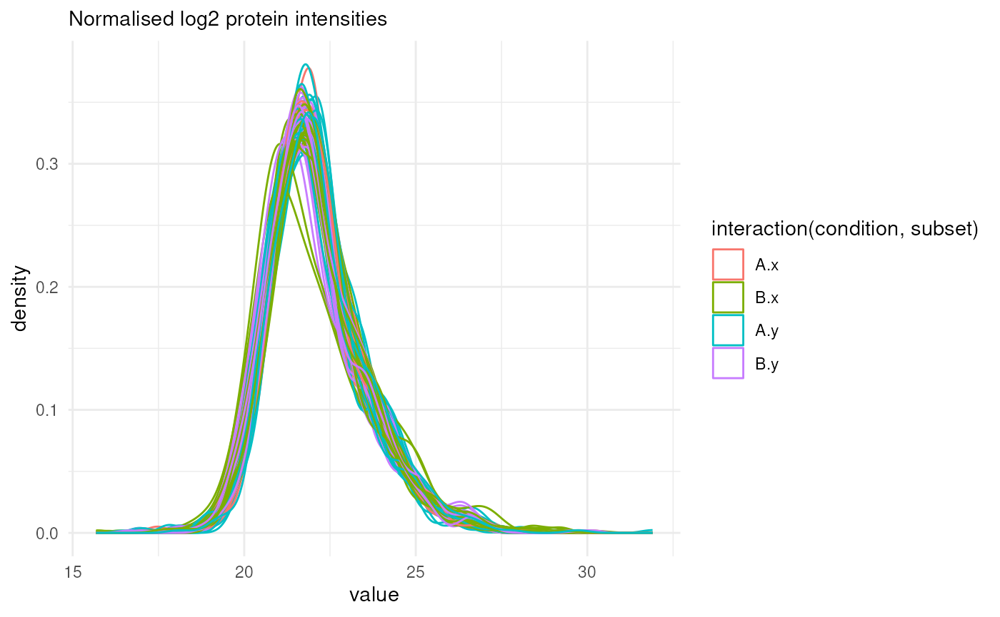
qfNE[, , "proteins"] |>
longForm(colvars = colnames(colData(qfNE))) |>
data.frame() |>
filter(!is.na(value)) |>
ggplot() +
aes(x = source,
y = value,
colour = interaction(condition,subset),
group = colname) +
xlab("sample") +
geom_boxplot() +
theme_minimal() +
labs(subtitle = "Normalised log2 protein intensities")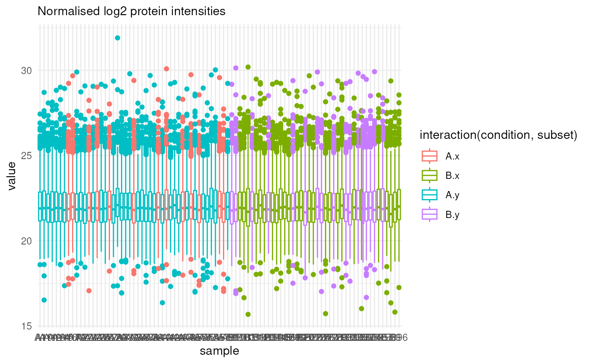
psmMDS <- getWithColData(qfNE, "proteins") |>
as("SingleCellExperiment") |>
runMDS(exprs_values = 1) |>
plotMDS(colour_by = "condition", shape_by = "subset") +
labs(title = "Median normalisation")
psmMDS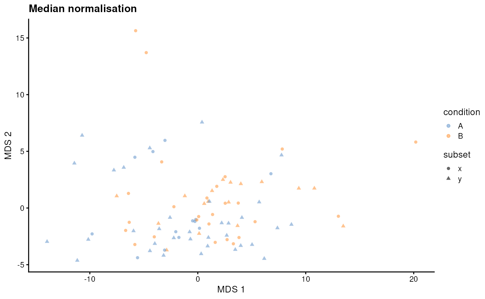
We first define the model. We only have two sources of variability in the experiment that we can model, i.e. the effect of the condition and the subset.
We fit this model to each psm ion of the normalised and log2-transformed assay in QFeature object qf using the msqrob function.
model <- ~ condition * subset
qf <- msqrob(
qf,
i = "ionsNorm",
formula = model,
robust = TRUE)We abled M-estimation (robust = TRUE) for improved robustness against outliers.
We can now convert the research questions 1. Is a precursor DA between the conditions in subset x 2. Is a precursor DA between the conditions in subset y 3. Is the effect of condition different between subset x and y 4. Prioritise precursors that are marginally DA between conditions.
In other words, we need to translate each question in a null and alternative hypothesis using a single model parameter or a linear combination of model parameters, which is also referred to with a contrast.
To aid defining contrasts, we will visualise the experimental design using the ExploreModelMatrix package.
vd <- ExploreModelMatrix::VisualizeDesign(
sampleData = colData(qf),
designFormula = model,
textSizeFitted = 4
)
vd$plotlist## [[1]]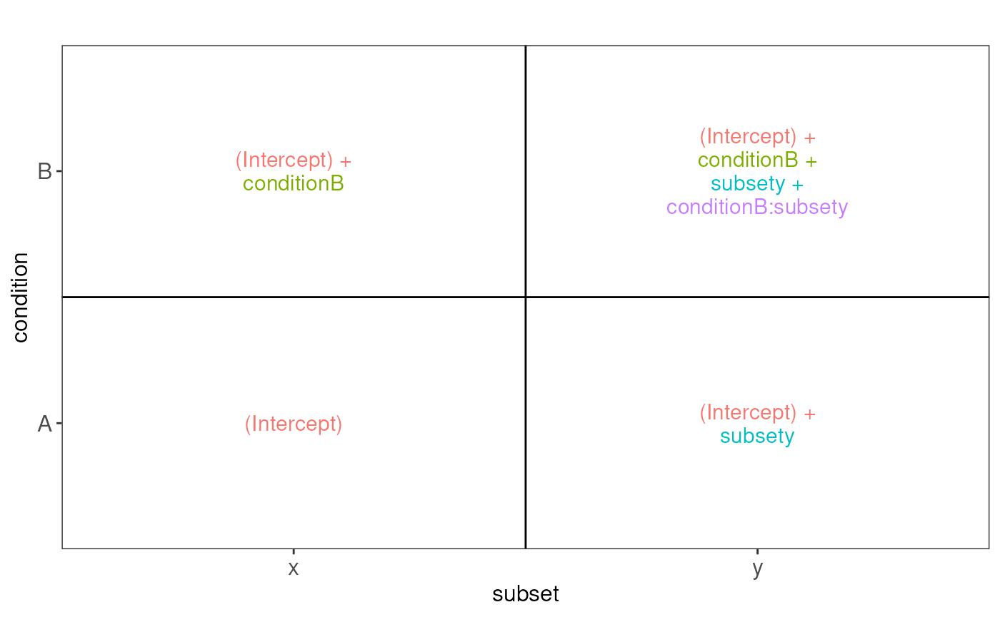
colData(qf)$subset |> table()##
## x y
## 30 60ADD contrasts
Below we define the contrast and construct the corresponding contrast matrix.
contrast <- c("conditionB= 0",
"conditionB + conditionB:subsety = 0",
"conditionB:subsety = 0",
"conditionB + 60/90*conditionB:subsety = 0")
(L <- makeContrast(
contrast,
parameterNames = colnames(vd$designmatrix)
))## conditionB conditionB + conditionB:subsety
## (Intercept) 0 0
## conditionB 1 1
## subsety 0 0
## conditionB:subsety 0 1
## conditionB:subsety conditionB + 60/90 * conditionB:subsety
## (Intercept) 0 0.0000000
## conditionB 0 1.0000000
## subsety 0 0.0000000
## conditionB:subsety 1 0.6666667We assess the contrast for each psm ion.
qf <- hypothesisTest(qf, i = "ionsNorm", contrast = L, overwrite = TRUE)We extract the results table from the proteins summarised experiment in the qf object.
inferences <-
msqrobCollect(qf[["ionsNorm"]], L)
alpha <- 0.05
volcanoplot <- plotVolcano(inferences) +
facet_wrap(~contrast) +
labs(title = "peptidoform ion level")
volcanoplot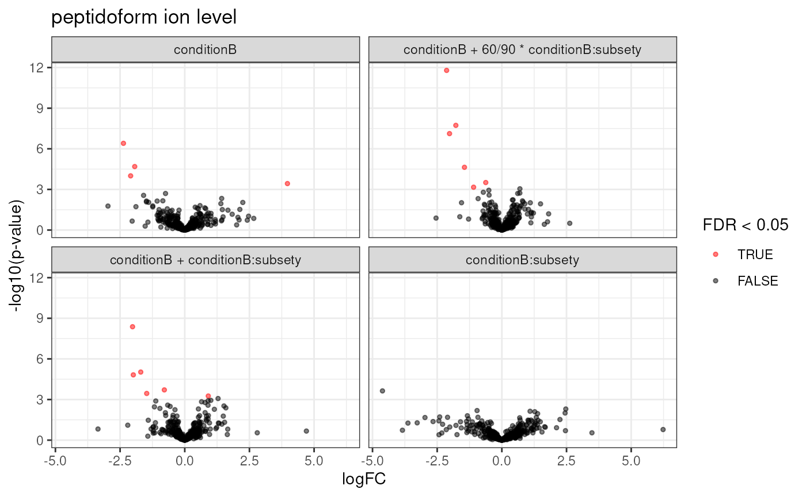
qfNE <- msqrob(
qfNE,
i = "proteins",
formula = model,
robust = TRUE)
qfNE <- hypothesisTest(qfNE, i = "proteins", contrast = L, overwrite = TRUE)We extract the results table from the proteins summarised experiment in the qf object.
inferencesNE <-
msqrobCollect(qfNE[["proteins"]], L)
alpha <- 0.05
volcanoplot <- plotVolcano(inferencesNE) +
facet_wrap(~contrast) +
labs(title = "protein level")
volcanoplot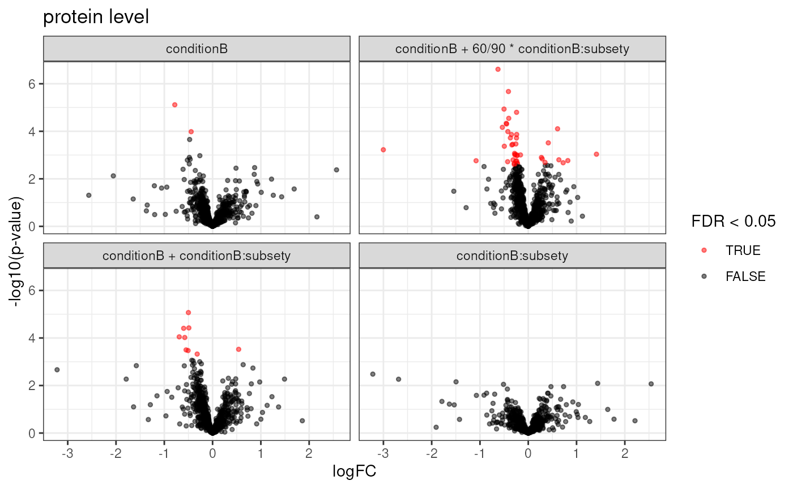
calculate_usage_paired <- function(qf, qfNE, i_precursor, i_protein = "proteins", fcol_precursor = "Proteins", fcol_protein = "Proteins", name = "ion_usage", match_cols_precursor_to_protein = colnames(qf[[i_precursor]]))
{
nf <- assay(qf[[i_precursor]])
nf[,] <- NA
match_precursor_to_protein_FC <- match(
rowData(qf[[i_precursor]])[[fcol_precursor]],
rowData(qfNE[[i_protein]])[[fcol_protein]])
idsMatch <- which(!is.na(match_precursor_to_protein_FC))
nf[idsMatch, ] <- assay(qfNE[[i_protein]])[match_precursor_to_protein_FC[idsMatch], match_cols_precursor_to_protein]
qf <- sweep( #4. Subtract log2 norm factor elementwise (MARGIN = 1:2)
qf,
MARGIN = 1:2,
STATS = nf,
i = i_precursor,
name = name
)
match_name <- paste0("match_",i_precursor,"_to_",i_protein)
rowData(qf[[name]])[[match_name]] <- match_precursor_to_protein_FC
qf <- filterFeatures(qf, i = name, filter = formula(paste0("~ !is.na(",match_name,")")))
}
matchedSamps <- match(colData(qf)$source,colData(qfNE)$source)
qf <- calculate_usage_paired(qf, qfNE, i_precursor = "ionsNorm", i_protein = "proteins", fcol_precursor = "Proteins", fcol_protein = "Proteins", name = "ion_usage", match_cols_precursor_to_protein = matchedSamps)
qf[, , "ion_usage"] |> #1.
longForm(colvars = colnames(colData(qf))) |> #2.
data.frame() |>
filter(!is.na(value)) |>
ggplot() + #3.
aes(x = value,
colour = interaction(condition,subset),
group = colname) +
geom_density() +
labs(subtitle = "usage") +
theme_minimal()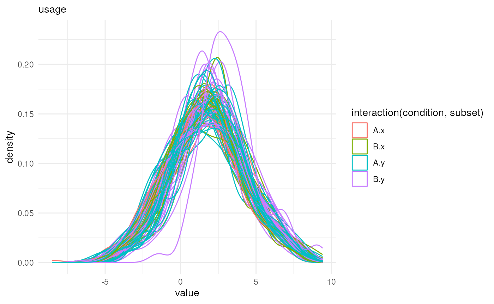
qf <- msqrob(
qf,
i = "ion_usage",
formula = model,
robust = TRUE,
overwrite = TRUE)We assess the contrast for each phospho-precursor usage.
qf <- hypothesisTest(qf, i = "ion_usage", contrast = L, overwrite = TRUE)We extract the results table from the proteins summarised experiment in the qf object.
inferencesIonUsage <-
msqrobCollect(qf[["ion_usage"]], L)
volcanoplot <- plotVolcano(inferencesIonUsage) +
facet_wrap(~contrast) +
labs(title = "Ion Usage")
volcanoplot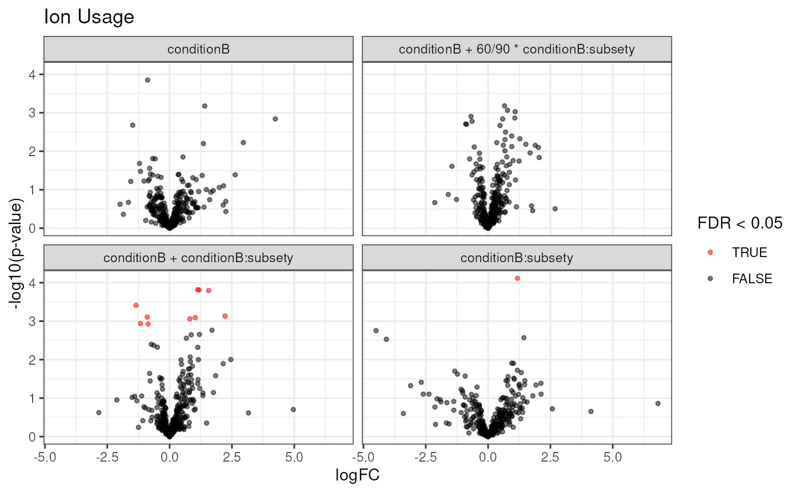